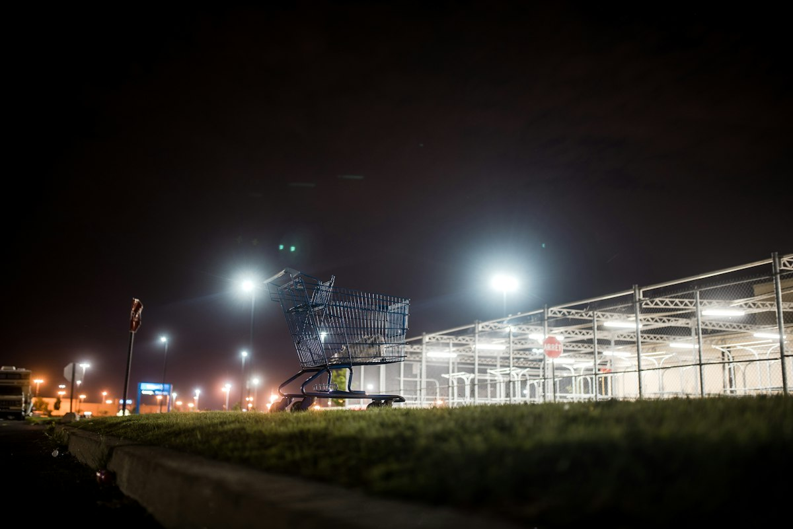

A deadline alone cannot carry astronauts back to the Moon
The target year for a crewed return arrives with no dependency list, and the missing engineering answers are the story

What the document actually carries
The lead for this piece arrived as a ScienceDaily headline and one year: 2028. The address returned HTTP 404 before this draft was written. What survives is the headline, and the headline carries a plan in its title and one date in its body. That is the entire load-bearing content available here. The verb does the rest of the work. A return asserts that crews have been there before. The headline treats that as settled history without naming a document that says so.
An announced year is a deadline, and a deadline is a different object from a plan. A plan names what could stop it and dates each of those things. The supplied text names nothing that could stop anything. Those omissions decide whether 2028 means a crew on regolith or a target on a chart. Which vehicle descends, and what pays for it: neither is stated. Cadence and abort coverage are missing too.
One detail of the record is worth more than it sounds. The queued address embeds an 08 November date stamp, while the item is catalogued as published on 09 November. That is what a routed document looks like: written overnight, posted in the morning, argued about later. The primary NASA text behind that routing is absent here. That absence is why the rest of this piece reasons instead of reporting.
The slowest part sets the date
The slowest component of a program sets the date, and the ambition behind it sets nothing at all. Any crewed lunar architecture contains one element that arrives last. An announced year presumes that this element arrives inside the year, not outside it. The predictable failure mode is cosmetic: the date holds, and the flight that fills it carries a reduced objective. Nobody has to lie for that to happen.
The supplied release contains no dependency list, so a reader cannot locate the slowest element and watch it. A serious schedule claim usually travels with a milestone table written to survive exactly this question. The table says an element is critical. It says the element is due on a stated date, and that evidence of progress exists. Without a table, a year describes intent instead of constraining anyone. The release has no table.
The descent vehicle is the schedule
Of the missing answers, the descent vehicle is the one most likely to run late. A crewed return needs a craft that leaves lunar orbit and falls to the surface with people inside. It then has to lift off and hand the crew back to whatever is waiting in orbit. Each of those transitions is a separate qualification campaign, and none of them shortens because a year was announced. Hardware that has never flown carries no schedule authority. Nothing shortens by announcement.
The record available here names neither a vehicle nor a contractor. It gives no readiness level, so everything above is reasoning rather than report. That limit should be stated plainly. An analysis that cannot see the design cannot grade whether 2028 is aggressive or generous. It can say what the year depends on. It can point at the paragraph of the real document where the answer sits.
The long-lead items decide who can fly
Program schedules are usually lost long before any test. The parts with multi-year procurement start moving late because nobody signed for them in the year before the announced one. A crewed descent stage needs an engine that has been hot-fired. It needs a welded tank and an avionics stack qualified to a vibration profile. Those are calendar facts, and none of them is decided by a speech.
The same logic reaches the people. A crew that flies in a given year has been assigned, trained on flight hardware, and rehearsed against failures years earlier. Site selection, suit certification, and surface operations training all sit in that interval. If the document does not date them, the year is only a request. That is why a dependency list matters more than a rendering.
No one can be rescued on the way back
The abort question is the one a public announcement rarely answers. It also decides whether a target year is survivable at all. A crew traveling to the Moon spends a long interval beyond rescue. If the ascent vehicle cannot dock, or if the return engine underperforms, nothing can be sent in time to help. The margin for that has to leave Earth as unused propellant and unspent oxygen. It is sized before anyone knows how the flight will go.
A margin stops being a line in a specification here. It becomes a clock that runs in one direction only. The supplied text gives no crew size and no mission duration, and those omissions are why 2028 cannot be graded from it. Duration and mass are the quantities a schedule argument lives on. Margin is bought with kilograms, and kilograms are bought with money. A document that names a year without stating what it moved is asking for trust rather than giving a check.
The second flight is the difficult one
One landing and one return would be an achievement and would prove very little about a program. The engineering meaning of a crewed return is repetition: vehicles built in series, crews trained in sequence, ground stations that turn around quickly. The supplied release is silent about cadence, which leaves open the possibility that 2028 buys a single event. A single event is different news. It deserves different verbs.
The second flight is the test.
Repetition is where a program reveals what it built. A first mission is permitted to consume everything the development budget contains. A crew that lands once has demonstrated hardware. A crew that lands, comes back, and is followed by another crew inside the same year has demonstrated a system. The distinction reaches the money: a second flight turns a project into an operation, and operations are funded on different terms. None of that is visible from a target year, and none of it would surprise anyone who reads program budgets. A landing year and a landing program are different announcements.
The words that give a schedule away
Program documents announce their own confidence level in fixed vocabulary. A floor costs nothing to state. A ceiling carries a signature and a consequence. A sentence that says a date rests on current funding has already conceded the year to a budget cycle. The item queued here offers none of those markers, because it contains no dated sentence at all.
Adjectives are the other tell. Bold, ambitious, and aggressive describe a document's posture, not its engineering status. They arrive when the milestone table is thin. An accountable program summary names test articles, dates, and the organization that signs them. Read the last paragraph of any real schedule claim and count how many proper nouns appear. A year announced with no names attached is a year nobody has agreed to defend.
The case for announcing a year
The strongest defense of a bare deadline is that a deadline does work. A program without a date keeps decisions open indefinitely. Open decisions are expensive in ways that never appear in a summary. That is a real effect. An announced year commits facilities, ends long configuration arguments, and gives suppliers a date to be late against.
That argument still needs a dependency list, and here the readings of a release part company. A deadline that names its critical components constrains anyone. One that names only the year is a schedule claim with nothing behind it. The reader deserves the milestone table. The headline calls the plan bold, and that adjective belongs to whoever wrote it rather than to any engineering review.
What to check when the full text arrives
The primary document settles most of this argument in places a reader can reach in an afternoon. Find the sentence that names the descent vehicle and the organization accountable for it. If a year appears before that name, the year is aspirational. Find the abort discussion and measure the interval between touchdown and the earliest rescue that anyone claims is possible. A rescue that needs weeks to launch is not a rescue, and the arithmetic of that interval is public.
Then find the money. A target year that no budget line repeats is a request rather than a commitment. Compare the milestone dates against the qualification tests that must precede them, and check whether that testing has hardware already built. Where the document cannot answer these, the year was probably never a schedule claim. The word 'plan' in the headline is then doing the work of a table.
Until that reading is done, quote the target year as an aspiration with a date attached. The quotation should also name the paragraph that fails to appear, and the dead address that carried it here.